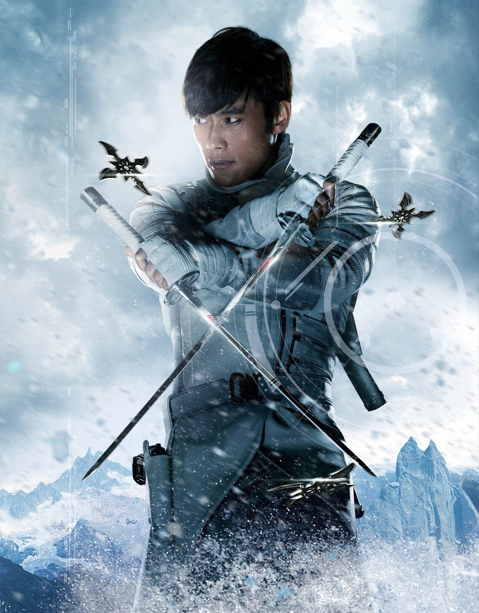

Call us on
Call us on  English
English Russian
Russian Kazakh
Kazakh Ukraine
Ukraine
Love polls? Do you want to see epic battles of various characters from various universes of pop culture? Then join our public INFINITY FIGHTS and vote for the strongest hero! Also in the discussions you can offer your options for battles. We welcome all newcomers and appreciate the old, but nevertheless we appreciate mutual respect and adequate behavior. Peace to all, meet in the heat of battle!
Stormshadow
"Fear is the best motivator."
Biography:
Skills and powers.
- -So strong that he easily cuts the barrels of pistols, rifles and can cut a bullet on the fly;
- - Able to easily support its own weight, disguising itself under the ceiling in doorways and corridors. He jumps several meters in height and length;
- - Storm Shadow's strength is on par with Snake Eyes, capable of inflicting damage on Cobra soldiers wearing metal bulletproof armor with a single swing of his sword; knock out a piece of wood from a thick wooden pole with a blow of a fist; calmly hold on to the handrails on the roof of an SUV driving at full speed, moreover, jump from the roof to the car door and even under the bottom of the car, in motion. Snake even held on to the bottom of the driving SUV, even as the ninja's back began to touch the pavement and sparks flew out.
- - Storm Shadow is able to run at such a speed that Ribcore in an accelerating suit could not catch up with him when running up the stairs (running speed reaches about 96 km / h);
- - Because of the speed of running and acrobatics, they did not have time to hit him from automatic fire, and Storm Shadow can also deflect a pistol bullet with a rolled blade, cutting it in two;
- - Storm Shadow's speed is on par with Snake Eyes, who is able to run over a flying car so fast that it will not lag behind an SUV driving under them at full speed.
- - Sudden attack with such speed that neither the best NATO fighters, nor the superior ordinary soldiers of GiJoe or Cobra can follow him.
- - Storm Shadow uses elements of acrobatics and parkour with precision in movement and combat, for faster movement and unpredictability of strikes and movements in combat.
- -instantly hit the shuriken in vital organs and kill the target on the spot, but also to hit unprotected parts of the armor (like eyes);
- - Easily takes blows similar to his own in strength, withstands many large cut wounds on the body, which does not affect the combat capability of the ninja;
- - Withstood, but stopped from shock when struck by a defibrillator (6000 volts);
- - Remained conscious after a massive and deep burn all over his back, although he was incapacitated;
- - Survived a stab wound from a harpoon blade through the stomach and a subsequent fall from more than a dozen meters into the icy waters of the Arctic, dressed in nothing but pants. He escaped after that and for some time was considered dead.
- - Able to artificially lower his pulse to zero in order to simulate his death and can immediately jump back into a combat state, even an experienced doctor will not understand the set-up;
- -Master of martial arts and ninjutsu. One of the best warriors of the legendary Arashikage clan, most likely second only to Snake Eyes, and also the best Cobra warrior. The only GiJoe soldier capable of fighting back Storm Shadow is Snake Eyes. Tommy can throw up to 4 shurikens at a time, not only in a straight line, but also so that the stars fly into the enemy from the side. Able to sneak up on any opponent, even the best agents of GiJoe and Cobra. The best NATO soldiers are amateurs against the backdrop of Shadow;
- -White ninja suit made of fabric and thick leather. It does not hinder movements, and also allows you to maintain comfortable conditions for the body in any climate of the planet, except for the poles. Somehow, Storm manages to remain invisible in it, even to the elite soldiers;
- - Two short Arashikage katana, which can be combined with the tips of the handles into a double sword. The swords forged by the Arashikage are unbreakable, not only can they easily pierce flesh, but they can easily cut Kevlar like paper, they can pierce the roof of an armored car, slash bullets and barrels of pistols or rifles;
- - Paired sai;
- - Shurikens. Sharp enough to stick into a metal wall;
- - Pistol SIG-Sauer P226 Sport II;